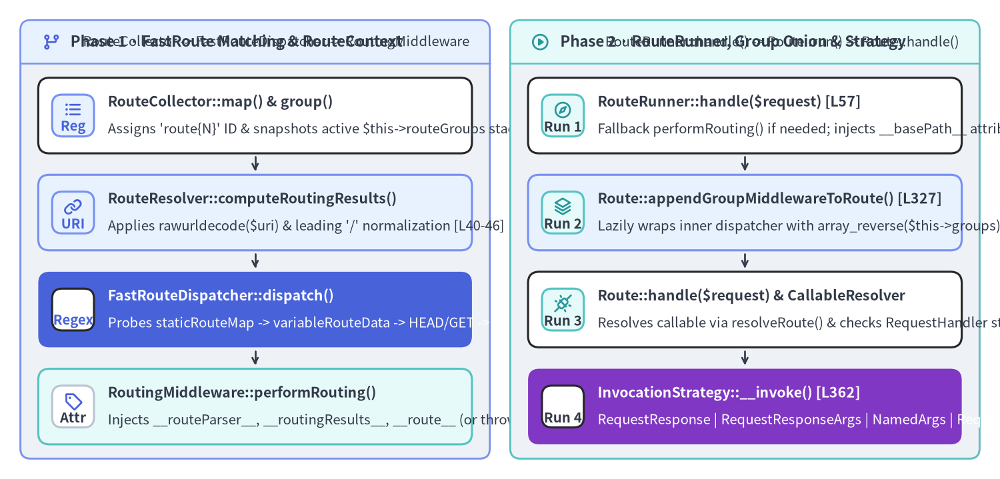
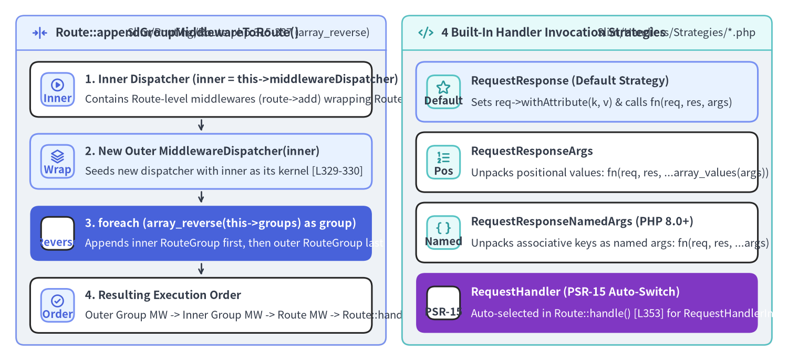

FastRoute Compilation, RouteRunner & Invocation Strategies Internals
Slim 4's routing engine spans 15 source files (953 LOC) across Slim\Routing\* (11 classes), Slim\Middleware\RoutingMiddleware (1 class), and Slim\Handlers\Strategies\* (4 classes). Its central architectural insight is splitting route resolution into two decoupled PSR-15 phases: RoutingMiddleware performs FastRoute regex matching and attaches immutable RouteContext attributes to ServerRequestInterface, while RouteRunner sits at the innermost core of the application middleware stack to execute RouteGroup middlewares, route-specific middlewares, and the route's InvocationStrategyInterface.

Source Code
from drawlib.canvas import save, setup
from drawlib.icons import phosphor
from drawlib.smartarts import CardList, Panel
from drawlib.styles import Colors, Styles
setup(width=196, height=94, dpi=150)
# Left Panel: Phase 1 — Route Registration & FastRoute Dispatch
p_left = Panel(
"Phase 1 · FastRoute Matching & RouteContext",
"RouteCollector -> FastRouteDispatcher -> RoutingMiddleware",
style=Styles.Neutral.patch(shape_r=2.0),
header_style=Styles.PrimaryNeutral.patch(shape_line_width=1.2),
text_style=Styles.DarkBold.patch(text_size=10.8),
description_style=Styles.Dark.patch(text_size=9.8),
icon=phosphor.git_branch,
icon_style=Styles.PrimaryBold,
header_variant="filled",
header_height=8.5,
)
p_left.draw((4.0, 4.0), width=92.0, height=86.0)
lx, lw, lh = p_left.get_content_box((4.0, 4.0), width=92.0, height=86.0, padding=(3.5, 2.8))
match_steps = CardList(
style=Styles.White,
text_style=Styles.DarkBold.patch(text_size=10.2),
description_style=Styles.Dark.patch(text_size=9.8),
badge_shape="rounded_rect",
badge_style=Styles.PrimaryNeutral,
badge_text_style=Styles.PrimaryBold.patch(text_size=9.8),
icon_style=Styles.PrimaryBold,
direction="vertical",
spacing=2.5,
show_arrows=True,
arrow_style=Styles.DarkBold.patch(line_arrow_head_scale=10, line_width=1.3),
)
match_steps.add(
"RouteCollector::map() & group()",
"Assigns 'route{N}' ID & snapshots active $this->routeGroups stack",
badge_text="Reg",
icon=phosphor.list_bullets,
)
match_steps.add(
"RouteResolver::computeRoutingResults()",
"Applies rawurldecode($uri) & leading '/' normalization [L40-46]",
badge_text="URI",
icon=phosphor.link,
style=Styles.PrimaryNeutral,
)
match_steps.add(
"FastRouteDispatcher::dispatch()",
"Probes staticRouteMap -> variableRouteData -> HEAD/GET -> '*' -> 405/404",
badge_text="Regex",
icon=phosphor.magnifying_glass,
style=Styles.PrimaryFlat,
text_style=Styles.WhiteBold.patch(text_size=10.2),
description_style=Styles.White.patch(text_size=9.8),
badge_style=Styles.White,
badge_text_style=Styles.PrimaryBold.patch(text_size=9.8),
icon_style=Styles.WhiteBold,
)
match_steps.add(
"RoutingMiddleware::performRouting()",
"Injects __routeParser__, __routingResults__, __route__ (or throws 404/405)",
badge_text="Attr",
icon=phosphor.tag,
style=Styles.SecondaryNeutral,
badge_style=Styles.White.patch(shape_line_color=Colors.Gray4),
badge_text_style=Styles.DarkBold.patch(text_size=9.8),
)
match_steps.draw(xy=lx, width=lw, height=lh)
# Right Panel: Phase 2 — RouteRunner, Group Onion & Strategy Invocation
p_right = Panel(
"Phase 2 · RouteRunner, Group Onion & Strategy",
"RouteRunner::handle() -> Route::run() -> Route::handle()",
style=Styles.Neutral.patch(shape_r=2.0),
header_style=Styles.SecondaryNeutral.patch(shape_line_width=1.2),
text_style=Styles.DarkBold.patch(text_size=10.8),
description_style=Styles.Dark.patch(text_size=9.8),
icon=phosphor.play_circle,
icon_style=Styles.SecondaryBold,
header_variant="filled",
header_height=8.5,
)
p_right.draw((100.0, 4.0), width=92.0, height=86.0)
rx, rw, rh = p_right.get_content_box((100.0, 4.0), width=92.0, height=86.0, padding=(3.5, 2.8))
exec_steps = CardList(
style=Styles.White,
text_style=Styles.DarkBold.patch(text_size=10.2),
description_style=Styles.Dark.patch(text_size=9.8),
badge_shape="rounded_rect",
badge_style=Styles.SecondaryNeutral,
badge_text_style=Styles.DarkBold.patch(text_size=9.8),
icon_style=Styles.SecondaryBold,
direction="vertical",
spacing=2.5,
show_arrows=True,
arrow_style=Styles.DarkBold.patch(line_arrow_head_scale=10, line_width=1.3),
)
exec_steps.add(
"RouteRunner::handle($request) [L57]",
"Fallback performRouting() if needed; injects __basePath__ attribute",
badge_text="Run 1",
icon=phosphor.compass,
)
exec_steps.add(
"Route::appendGroupMiddlewareToRoute() [L327]",
"Lazily wraps inner dispatcher with array_reverse($this->groups) once",
badge_text="Run 2",
icon=phosphor.stack,
style=Styles.PrimaryNeutral,
)
exec_steps.add(
"Route::handle($request) & CallableResolver",
"Resolves callable via resolveRoute() & checks RequestHandler strategy",
badge_text="Run 3",
icon=phosphor.plugs_connected,
)
exec_steps.add(
"InvocationStrategy::__invoke() [L362]",
"RequestResponse | RequestResponseArgs | NamedArgs | RequestHandler",
badge_text="Run 4",
icon=phosphor.lightning,
style=Styles.AccentFlat,
text_style=Styles.WhiteBold.patch(text_size=10.2),
description_style=Styles.White.patch(text_size=9.8),
badge_style=Styles.White,
badge_text_style=Styles.DarkBold.patch(text_size=9.8),
icon_style=Styles.WhiteBold,
)
exec_steps.draw(xy=rx, width=rw, height=lh)
save()
1. Route Collection & Prefix Group Stack (RouteCollectorProxy & RouteCollector)
How Nested group() Calls Accumulate Prefixes and Group Stacks
When user code defines nested route groups:
$app->group('/v1', function (RouteCollectorProxy $group) {
$group->group('/users', function (RouteCollectorProxy $users) {
$users->get('/{id}', UserController::class . ':show');
})->add(UserScopeMiddleware::class);
})->add(ApiVersionMiddleware::class);
Three mechanisms in RouteCollectorProxy (Slim/Routing/RouteCollectorProxy.php), RouteCollector (Slim/Routing/RouteCollector.php), and RouteGroup (Slim/Routing/RouteGroup.php) collaborate synchronously during registration:
- Prefix Concatenation (
Slim/Routing/RouteCollectorProxy.php:165-180): EveryRouteCollectorProxyholdsprotected string $groupPattern(defaulting to''onSlim\App). When$proxy->group($pattern, $callable)is called, it prepends$pattern = $this->groupPattern . $patternand delegates to$this->routeCollector->group($pattern, $callable). - Push/Pop Group Stack (
Slim/Routing/RouteCollector.php:230-239):RouteCollector::group()creates a newRouteGroupwith a childRouteCollectorProxybound to the concatenated$pattern, pushes$routeGrouponto$this->routeGroups[], executes$routeGroup->collectRoutes(), and immediately pops$this->routeGroupsviaarray_pop($this->routeGroups):// Slim/Routing/RouteCollector.php:230-239 public function group(string $pattern, $callable): RouteGroupInterface { $routeGroup = $this->createGroup($pattern, $callable); $this->routeGroups[] = $routeGroup; $routeGroup->collectRoutes(); array_pop($this->routeGroups); return $routeGroup; } - Route Identifier & Group Snapshot (
Slim/Routing/RouteCollector.php:268-300): Any$users->get(...)call insidecollectRoutes()invokesRouteCollector::map(), which passes a copy of the currently active$this->routeGroupsarray ([RouteGroup('/v1'), RouteGroup('/v1/users')]) and$this->routeCounterintonew Route(...)(Slim/Routing/Route.php:120-141). The route receives deterministic identifier'route' . $identifier(e.g.'route0','route1') and stores$this->routes['route0'] = $route.
2. Dispatcher & FastRouteDispatcher: Customizing Nikic FastRoute
Lazy FastRoute Compilation & Disk Cache (Slim/Routing/Dispatcher.php:24-58)
Slim\Routing\Dispatcher does not compile FastRoute regex tables during $app->get() registration. Instead, Dispatcher::createDispatcher() compiles routes lazily on the first dispatch() or getAllowedMethods() call:
// Slim/Routing/Dispatcher.php:30-54
$routeDefinitionCallback = function (FastRouteCollector $r): void {
$basePath = $this->routeCollector->getBasePath();
foreach ($this->routeCollector->getRoutes() as $route) {
$r->addRoute($route->getMethods(), $basePath . $route->getPattern(), $route->getIdentifier());
}
};
$cacheFile = $this->routeCollector->getCacheFile();
if ($cacheFile) {
$dispatcher = \FastRoute\cachedDispatcher($routeDefinitionCallback, [
'dataGenerator' => GroupCountBased::class,
'dispatcher' => FastRouteDispatcher::class,
'routeParser' => new Std(),
'cacheFile' => $cacheFile,
]);
} else {
$dispatcher = \FastRoute\simpleDispatcher($routeDefinitionCallback, [
'dataGenerator' => GroupCountBased::class,
'dispatcher' => FastRouteDispatcher::class,
'routeParser' => new Std(),
]);
}
Notice that FastRoute's handler payload is the string identifier $route->getIdentifier() ('route0'), not the PHP closure or controller object! Because 'route0' is a plain string, \FastRoute\cachedDispatcher() can serialize the entire compiled static map and chunked regex array to $cacheFile using var_export() (<?php return ...;), allowing production PHP-FPM workers to load compiled regex tables straight from OPcache with zero route parsing overhead.
Why FastRouteDispatcher Overrides GroupCountBased (Slim/Routing/FastRouteDispatcher.php:15-116)
Slim\Routing\FastRouteDispatcher subclasses FastRoute\Dispatcher\GroupCountBased and completely replaces dispatch($httpMethod, $uri) (lines 33–59) and adds getAllowedMethods(string $uri) (lines 92–115):
// Slim/Routing/FastRouteDispatcher.php:33-59
public function dispatch($httpMethod, $uri): array
{
$routingResults = $this->routingResults($httpMethod, $uri);
if ($routingResults[0] === self::FOUND) {
return $routingResults;
}
// For HEAD requests, attempt fallback to GET
if ($httpMethod === 'HEAD') {
$routingResults = $this->routingResults('GET', $uri);
if ($routingResults[0] === self::FOUND) {
return $routingResults;
}
}
// If nothing else matches, try fallback routes
$routingResults = $this->routingResults('*', $uri);
if ($routingResults[0] === self::FOUND) {
return $routingResults;
}
if (!empty($this->getAllowedMethods($uri))) {
return [self::METHOD_NOT_ALLOWED, null, []];
}
return [self::NOT_FOUND, null, []];
}
- $O(1)$ Static Map vs Chunked Variable Regex (
routingResults(), lines 67–85): First checksisset($this->staticRouteMap[$httpMethod][$uri])in $O(1)$ hash time. If not a static route, calls$this->dispatchVariableRoute($this->variableRouteData[$httpMethod], $uri)(inherited from FastRouteGroupCountBased, which matches chunked combined regexes in groups of ~10 routes). - RFC 2616
HEAD -> GETFallback (lines 41–46): If an incomingHEADrequest has no explicitHEADroute,FastRouteDispatcherautomatically retriesroutingResults('GET', $uri). Later, at the end ofSlim\App::handle()(Slim/App.php:218-222), Slim strips the response body ($response->withBody($emptyBody)) soHEADresponses never leak body bytes. - Wildcard
'*'Method Fallback (lines 49–52): Supports catch-all routes registered with$app->map(['*'], ...). - Single-URI Memoization in
getAllowedMethods(string $uri)(lines 92–115): When a route is not found for$httpMethod, line 54 calls$this->getAllowedMethods($uri). To prevent scanning all static and variable route tables twice (once indispatch()at line 54 to detectMETHOD_NOT_ALLOWED, and a second time whenRoutingMiddlewarecalls$routingResults->getAllowedMethods()atSlim/Middleware/RoutingMiddleware.php:80),FastRouteDispatchercaches the last queried URI inprivate ?string $allowedMethodsUriandprivate array $allowedMethods(lines 20–25, 94–96, 112–114)!
3. RoutingMiddleware, RouteContext & Route::run() Group Onion

Source Code
from drawlib.canvas import save, setup
from drawlib.icons import phosphor
from drawlib.smartarts import CardList, Panel
from drawlib.styles import Colors, Styles
setup(width=196, height=90, dpi=150)
# Left Panel: Route::appendGroupMiddlewareToRoute()
p_left = Panel(
"Route::appendGroupMiddlewareToRoute()",
"Slim/Routing/Route.php:315-337 (array_reverse)",
style=Styles.Neutral.patch(shape_r=2.0),
header_style=Styles.PrimaryNeutral.patch(shape_line_width=1.2),
text_style=Styles.DarkBold.patch(text_size=10.8),
description_style=Styles.Dark.patch(text_size=9.8),
icon=phosphor.arrows_in_line_horizontal,
icon_style=Styles.PrimaryBold,
header_variant="filled",
header_height=8.5,
)
p_left.draw((4.0, 4.0), width=92.0, height=82.0)
lx, lw, lh = p_left.get_content_box((4.0, 4.0), width=92.0, height=82.0, padding=(3.5, 3.0))
grp_steps = CardList(
style=Styles.White,
text_style=Styles.DarkBold.patch(text_size=10.2),
description_style=Styles.Dark.patch(text_size=9.8),
badge_shape="rounded_rect",
badge_style=Styles.PrimaryNeutral,
badge_text_style=Styles.PrimaryBold.patch(text_size=9.8),
icon_style=Styles.PrimaryBold,
direction="vertical",
spacing=2.6,
show_arrows=True,
arrow_style=Styles.DarkBold.patch(line_arrow_head_scale=10, line_width=1.3),
)
grp_steps.add(
"1. Inner Dispatcher (inner = this->middlewareDispatcher)",
"Contains Route-level middlewares (route->add) wrapping Route",
badge_text="Inner",
icon=phosphor.play_circle,
)
grp_steps.add(
"2. New Outer MiddlewareDispatcher(inner)",
"Seeds new dispatcher with inner as its kernel [L329-330]",
badge_text="Wrap",
icon=phosphor.stack,
style=Styles.PrimaryNeutral,
)
grp_steps.add(
"3. foreach (array_reverse(this->groups) as group)",
"Appends inner RouteGroup first, then outer RouteGroup last [L332-334]",
badge_text="Reverse",
icon=phosphor.arrows_down_up,
style=Styles.PrimaryFlat,
text_style=Styles.WhiteBold.patch(text_size=10.2),
description_style=Styles.White.patch(text_size=9.8),
badge_style=Styles.White,
badge_text_style=Styles.PrimaryBold.patch(text_size=9.8),
icon_style=Styles.WhiteBold,
)
grp_steps.add(
"4. Resulting Execution Order",
"Outer Group MW -> Inner Group MW -> Route MW -> Route::handle()",
badge_text="Order",
icon=phosphor.check_circle,
)
grp_steps.draw(xy=lx, width=lw, height=lh)
# Right Panel: 4 Handler Invocation Strategies
p_right = Panel(
"4 Built-In Handler Invocation Strategies",
"Slim/Handlers/Strategies/*.php",
style=Styles.Neutral.patch(shape_r=2.0),
header_style=Styles.SecondaryNeutral.patch(shape_line_width=1.2),
text_style=Styles.DarkBold.patch(text_size=10.8),
description_style=Styles.Dark.patch(text_size=9.8),
icon=phosphor.code,
icon_style=Styles.SecondaryBold,
header_variant="filled",
header_height=8.5,
)
p_right.draw((100.0, 4.0), width=92.0, height=82.0)
rx, rw, rh = p_right.get_content_box((100.0, 4.0), width=92.0, height=82.0, padding=(3.5, 3.0))
strat_list = CardList(
style=Styles.White,
text_style=Styles.DarkBold.patch(text_size=10.2),
description_style=Styles.Dark.patch(text_size=9.8),
badge_shape="rounded_rect",
badge_style=Styles.SecondaryNeutral,
badge_text_style=Styles.DarkBold.patch(text_size=9.8),
icon_style=Styles.SecondaryBold,
direction="vertical",
spacing=2.6,
)
strat_list.add(
"RequestResponse (Default Strategy)",
"Sets req->withAttribute(k, v) & calls fn(req, res, args)",
badge_text="Default",
icon=phosphor.star,
style=Styles.PrimaryNeutral,
)
strat_list.add(
"RequestResponseArgs",
"Unpacks positional values: fn(req, res, ...array_values(args))",
badge_text="Pos",
icon=phosphor.list_numbers,
)
strat_list.add(
"RequestResponseNamedArgs (PHP 8.0+)",
"Unpacks associative keys as named args: fn(req, res, ...args)",
badge_text="Named",
icon=phosphor.brackets_curly,
)
strat_list.add(
"RequestHandler (PSR-15 Auto-Switch)",
"Auto-selected in Route::handle() [L353] for RequestHandlerInterface",
badge_text="PSR-15",
icon=phosphor.lightning,
style=Styles.AccentFlat,
text_style=Styles.WhiteBold.patch(text_size=10.2),
description_style=Styles.White.patch(text_size=9.8),
badge_style=Styles.White,
badge_text_style=Styles.DarkBold.patch(text_size=9.8),
icon_style=Styles.WhiteBold,
)
strat_list.draw(xy=rx, width=rw, height=lh)
save()
Why Route::appendGroupMiddlewareToRoute() Reverses $this->groups (Slim/Routing/Route.php:327-337)
When a route is created inside nested groups (OuterGroup -> InnerGroup -> Route), developers register route-level middlewares ($route->add(...)) before the enclosing group() callbacks finish returning ($outerGroup->add(...) executes after collectRoutes() completes!).
Therefore, Route cannot attach group middlewares inside Route::__construct(). Instead, on the first call to Route::run() (Slim/Routing/Route.php:315-322), appendGroupMiddlewareToRoute() wraps the route's existing $this->middlewareDispatcher ($inner) inside a brand-new MiddlewareDispatcher($inner) and iterates array_reverse($this->groups):
// Slim/Routing/Route.php:327-337
protected function appendGroupMiddlewareToRoute(): void
{
$inner = $this->middlewareDispatcher;
$this->middlewareDispatcher = new MiddlewareDispatcher($inner, $this->callableResolver, $this->container);
foreach (array_reverse($this->groups) as $group) {
$group->appendMiddlewareToDispatcher($this->middlewareDispatcher);
}
$this->groupMiddlewareAppended = true;
}
Because MiddlewareDispatcher::add() is LIFO, adding InnerGroup's middlewares first and OuterGroup's middlewares second causes OuterGroup to wrap InnerGroup, which wraps $inner (the Route's own middlewares), which wraps Route::handle()!
Automatic PSR-15 RequestHandler Strategy Switching (Slim/Routing/Route.php:342-363)
At the very center of Route::run(), Route::handle(ServerRequestInterface $request) resolves $this->callable via CallableResolver::resolveRoute() and inspects whether the resolved callable is a [RequestHandlerInterface, 'handle'] pair:
// Slim/Routing/Route.php:342-363
public function handle(ServerRequestInterface $request): ResponseInterface
{
if ($this->callableResolver instanceof AdvancedCallableResolverInterface) {
$callable = $this->callableResolver->resolveRoute($this->callable);
} else {
$callable = $this->callableResolver->resolve($this->callable);
}
$strategy = $this->invocationStrategy;
$strategyImplements = class_implements($strategy);
if (
is_array($callable)
&& $callable[0] instanceof RequestHandlerInterface
&& !in_array(RequestHandlerInvocationStrategyInterface::class, $strategyImplements)
) {
$strategy = new RequestHandler();
}
$response = $this->responseFactory->createResponse();
return $strategy($callable, $request, $response, $this->arguments);
}
Even when the application's default strategy is RequestResponse, lines 353–359 automatically switch to new RequestHandler() whenever a route target implements PSR-15 RequestHandlerInterface, invoking $callable($request) directly without requiring the user to reconfigure the route's invocation strategy.
Continue to Chapter 5: ErrorMiddleware, ErrorHandler & Renderers to trace how exceptions thrown during routing or handler execution are intercepted, negotiated, and rendered.